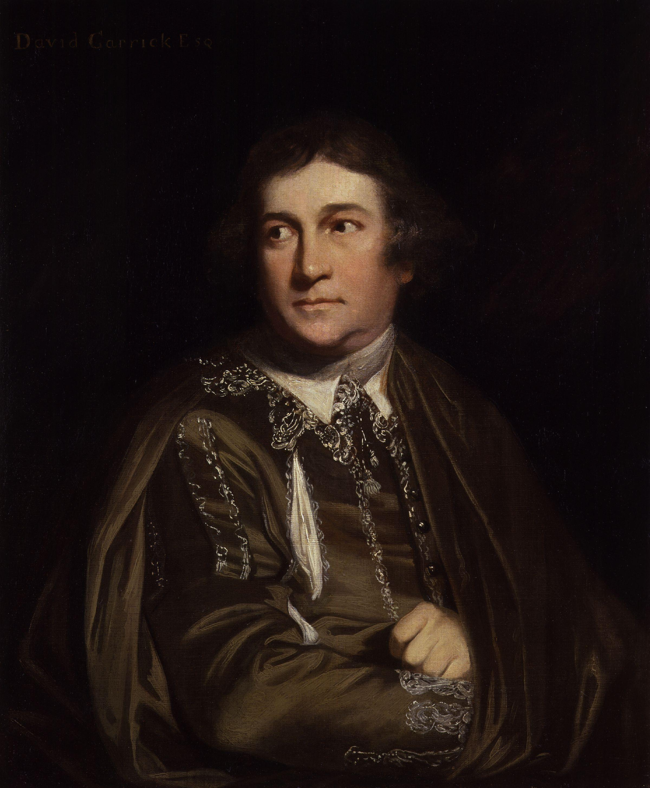

David Garrick (1717–1779) the renowned actor, playwright, theatre manager and producer that influenced nearly all aspects of theatrical practice throughout the 18th century, was initially the pupil and friend of Dr Samuel Johnson, helping him stage his one and only play, ‘Irene’.